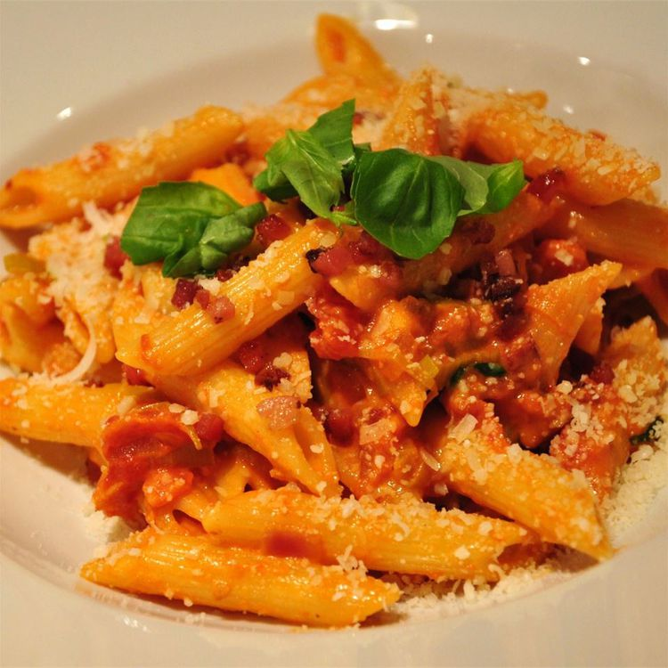

Pasta alla Vodka

Description
This pasta alla vodka recipe is easy to throw together for a quick dinner any night of the week — the sauce can be made while you cook the pasta. Sprinkle with Parmesan cheese to serve. Delicious!
Ingredients
- 2 tablespoons olive oil
- 2 cloves garlic, minced
- 1 (28 ounce) can whole peeled tomatoes
- 1/2 cup chopped fresh basil
- salt and pepper to taste
- 1/4 cup vodka
- 1 pound penne pasta
- 1 pint heavy cream
Steps
- Heat oil in a large skillet over medium heat. Add garlic; cook and stir until fragrant, 1 to 2 minutes. Stir in tomatoes, breaking up with a fork. Stir in basil, salt, and pepper; simmer for 15 minutes. Stir in vodka and cook 15 minutes more.
- Meanwhile, bring a large pot of lightly salted water to a boil. Add pasta and cook until al dente, 8 to 10 minutes; drain.
- Stir cream into sauce; cook 10 minutes more. Toss with hot pasta.
Home